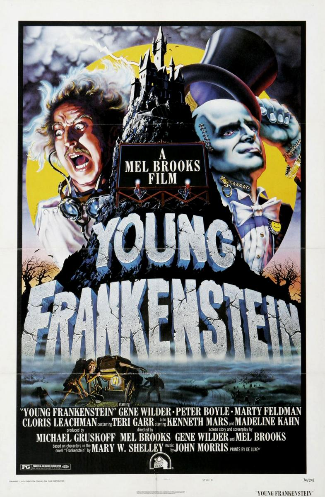
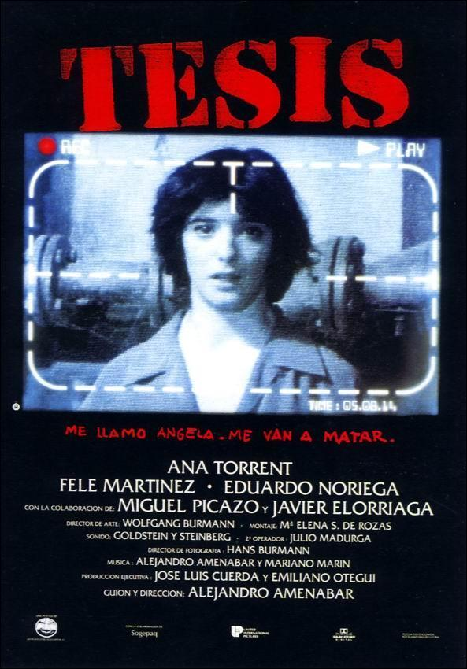

| Título | Resumen | Datos Técnicos | Trailer |
El Jovencito Frankenstein |
El joven doctor Frederick Frankenstein, un neurocirujano norteamericano, trata de escapar del estigma legado por su abuelo, quien creó años atrás una horrible criatura. Pero, cuando hereda el castillo de Frankenstein y descubre un extraño manual científico en el que se explica paso a paso cómo devolverle la vida a un cadáver, comienza a crear su propio monstruo |
Mel Brooks Gene Wilder, Madeline Kahn, Marty Feldman 1974 Estados Unidos John Morris Gerald Hirschfeld |
|
|---|---|---|---|
Tesis |
Ángela, estudiante de Imagen, está preparando una tesis sobre la violencia audiovisual. Como complemento a su trabajo, su director de tesis se compromete a buscar en la videoteca de la facultad material para ella, pero al día siguiente es hallado muerto. Ángela conoce a Chema, un compañero experto en cine gore y pornográfico, y a Bosco, un extraño chico, amigo íntimo de una joven asesinada en una snuff movie |
Alejandro Amenábar Ana Torrent, Fele Martínez, Eduardo Noriega 1996 España Alejandro Amenábar, Mariano Marín Hans Burmann |
|
Trainspotting
|
Mark Renton, un joven escocés de Edimburgo, y sus amigos son adictos a la heroína, lo que significa que viven fuera de la realidad, en un mundo aparte. Dentro del grupo hay un psicópata alcohólico y violento, un joven desesperado, un mujeriego con un conocimiento enciclopédico sobre Sean Connery y un entusiasta de las caminatas y de Iggy Pop |
Danny Boyle Ewan McGregor, Ewen Bremner, Jonny Lee Miller, Kevin McKidd, Robert Carlyle, Kelly Macdonald 1996 Reino Unido Varios Brian Trufano |